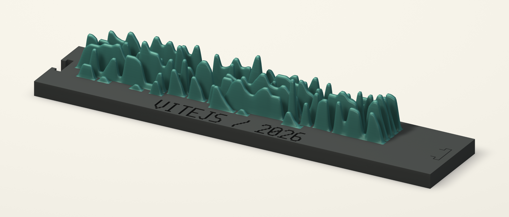

Activity skyline.
Turn a year of GitHub activity into
a 3D-printable desk sculpture.
Build your model
Daily counts in CSV or JSON.
An independent service, github-contributions-api.jogruber.de, looks up the public calendar. It receives the handle and year.
Bring the calendar in yourself
- Enter a GitHub handle above
- Save that page as HTML. On a computer use Save Page As, or the Page Source format in Safari. On a phone, touch and hold the link in step 1 and download the linked file.
This route asks nobody but GitHub. The saved file is read on your device and is not uploaded.
vitejs/vite
Example
Finish & engraving
Up to 24 characters. The year is engraved alongside.
Activity calendar.
2026- Commits
- 1,147
- Active days
- 213
- Peak per day
- 30
Print kit & supplier quote
Send the package to the printer of your choice. Mandarin 3D rates · White-label fulfillment
ZIP with individual STL files in millimeters.
Print guide & data sources
At the printer
Use millimeters and 100% scale. The single STL places both pieces flat with a 4 mm gap. Start with a 0.4 mm nozzle and 0.2 mm layers. Switch from charcoal to the tower color above the 6.4 mm base.
Reading the skyline
Weeks run from left to right. Architecture gives each active day its own roof. Contour relief traces seven ridges, one per weekday. Both shapes use a logarithmic height scale for the year. The cap lifts off to attach next year’s section.
Activity sources
A repository uses default-branch commits grouped by UTC committer date, read from GitHub’s public API in your browser. A profile uses GitHub’s public contribution calendar. An independent open-source service, github-contributions-api.jogruber.de, looks it up and receives the handle and year. You can instead save the calendar page from GitHub and choose that file. Files you choose are read on your device and are not uploaded. For a private repository, import daily counts from a local checkout. GH Activity Skyline is an independent project and is not affiliated with GitHub.
An independent project. Not affiliated with or endorsed by GitHub.